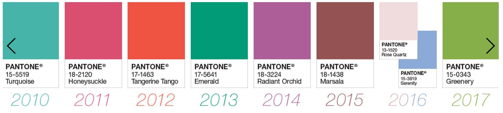

menu 1
menu 2
menu 3
menu 4
menu 5
매년 팬톤(PANTONE) 사에서 올해의 컬러를 제안하고 있다.
이 회사에 대해 간단한 설명을 하자면, 컬러를 사용하거나 관련된 업무를 하는 모든 이들에게 컬러를 통한 의사소통을 할 수 있도록 도와주는 곳이다.
그리고 '올해의 컬러'로 지정된 컬러는 수 많은 영역의 상품들의 출시에도 영향을 미친다.
‘컬러’는 단순히 개인의 취향에만 머무는 것이 아니라,
라이프스타일에 깊숙이 들어와 제품 구매에도 영향을 미치는 중요한 요소가 되었다는 것을 단적으로 보여준다.
그동안 '올해의 컬러'로 선정됐던 색들을 연도별로 볼 수 있게 간략히 정리해놓은 뒤,
해당 컬러를 모티브로한 제품을 파는 인터넷 몰처럼 만들어볼 생각이다.
